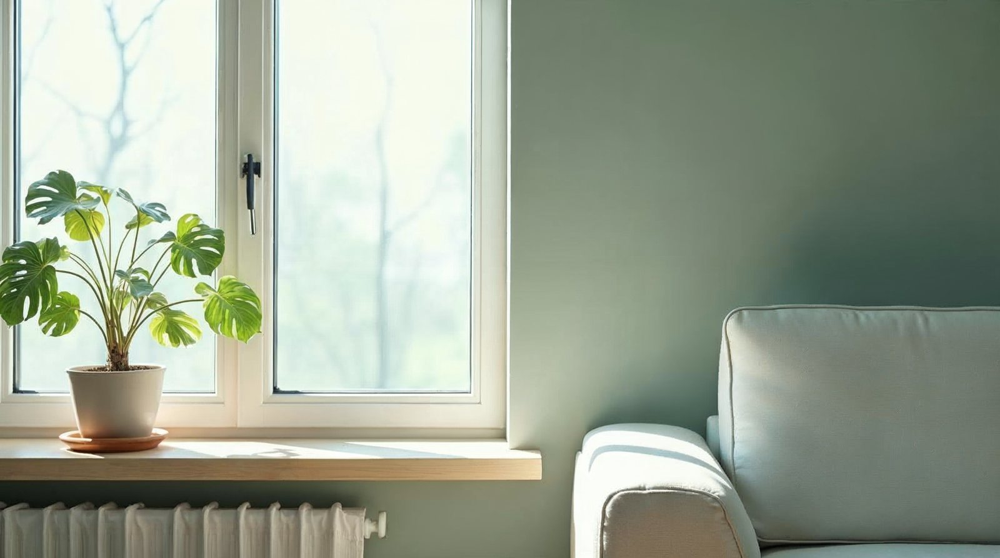
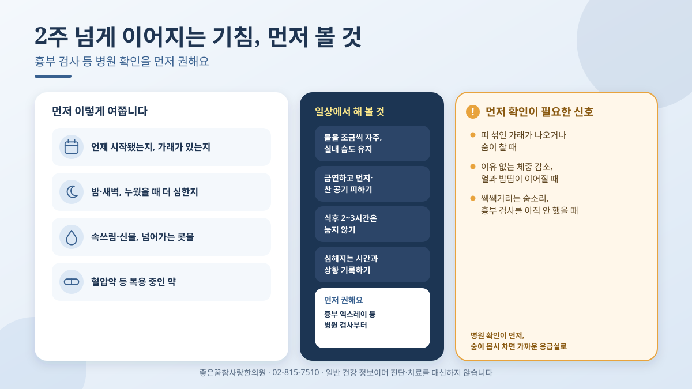

이종호 한의사 감수좋은꿈참사랑한의원 대표원장 (한의사 면허번호 19769)발행 2026-11-26 · 수정 2026-11-26
이 글의 차례
새벽 두 시, 겨우 잠들었는데 목이 간질거리더니 기침이 터집니다. 옆에서 자는 가족이 깰까 봐 이불로 입을 막고 참아 보지만, 참을수록 더 세게 터져 나오지요. 혹시 몇 주째 밤마다 거실로 나와 물을 마시며 기침이 가라앉기를 기다리고 계시지는 않나요?
기침이 2주를 넘기면 그냥 두지 말고 살펴볼 때입니다. 3주가 넘었는데 아직 흉부 엑스레이를 찍지 않으셨다면, 내과 확인을 먼저, 적어도 한의원 진료와 함께 받으시길 권합니다.
오래가는 기침은 몸보다 마음을 먼저 지치게 합니다. 회의 중에, 지하철 안에서 기침이 터질 때마다 눈치가 보이고, 혹시 큰 병은 아닐까 하는 걱정이 밤마다 따라오지요. 저는 그 걱정을 덜어 드리는 첫걸음이 검사라고 생각합니다.
왜 기침이 이렇게 오래 남을까요
기침은 목과 기관지에 들어온 것을 밀어내려는 몸의 반응입니다. 그런데 자극이 계속 남아 있거나 목이 예민해진 채로 있으면, 밀어낼 것이 없는데도 기침이 이어집니다. 오래가는 기침 뒤에는 이런 자극이 여러 개 겹쳐 있는 경우가 많습니다.
가장 흔한 것은 감기 뒤 예민해진 기도가 회복되는 데 시간이 걸리는 경우입니다. 이 이야기는 감기는 나았는데 기침만 몇 주째 남아 있을 때는 어떻게 살피나요? 글에 따로 적어 두었으니, 여기서는 제가 함께 살피는 다섯 갈래를 말씀드리겠습니다.
먼저 떠올리는 것은 코 뒤로 넘어가는 콧물입니다. 목 뒤로 무언가 흘러내리는 느낌에 헛기침이 잦고, 누우면 더 심하며, 아침에 가래가 걸려 있는 분이 많습니다. 기침의 출발점이 목이 아니라 코에 있는 셈이지요.
늦은 저녁도 자주 이야기에 오릅니다. 위산이 식도로 올라오는 역류가 있으면 밤늦게 먹고 누운 날 기침이 시작되고, 아침이면 목이 걸걸합니다. 속쓰림이 뚜렷하지 않은데도 역류가 목을 자극하는 경우가 있다고 알려져 있어, 식사 시각을 꼭 여쭙니다.
겨울에는 방 공기를 빼놓을 수 없습니다. 난방을 켠 채 자는 밤, 코가 막혀 입을 벌리고 자는 밤이면 목이 바짝 말라 아침 첫 기침이 길어집니다. 독서실이나 사무실처럼 하루 종일 마른 공기 속에 있는 분도 마찬가지고요.
말을 많이 하는 분께는 목의 긴장을 여쭙니다. 긴장하는 자리에서 목이 조이는 느낌이 들고, 그걸 풀려고 헛기침을 하다 기침으로 번지기도 합니다. 잦은 헛기침은 목을 더 예민하게 만들 수 있어서 목과 어깨가 늘 굳어 있는지도 함께 봅니다.
마지막은 잠입니다. 기침 때문에 잠이 끊기면 낮 피로가 쌓이고, 지친 몸이 목에 회복할 틈을 덜 주면서 다시 밤 기침이 길어지는 고리가 생기지요. 그래서 저는 기침 횟수만큼 기침 때문에 몇 번 깨셨는지를 눈여겨봅니다.
몸은 따로따로 움직이지 않습니다. 한 분에게 이 가운데 두세 가지가 겹쳐 있는 경우가 흔해서, 저는 기침만 떼어 보지 않고 하루 전체를 함께 들여다봅니다.
다만 이것들을 살피기 전에 먼저 확인해서 지워야 할 것이 있습니다. 천식, 결핵 같은 폐 질환, 오래 피운 담배와 관련된 변화, 일부 혈압약처럼 약이 기침과 관련되는 경우입니다. 흉부 엑스레이와 내과 진찰을 앞세우는 까닭이 여기에 있습니다.
2주와 3주, 무엇이 다를까요
의학에서는 기침이 이어진 기간에 따라 보통 3주 안쪽을 급성, 3주에서 8주 사이를 아급성, 8주를 넘기면 만성 기침으로 나눠 봅니다. 감기 뒤 기침은 대개 3주 안에 조금씩 줄어드는 경우가 많습니다.
우리나라에서는 기침이 2주 넘게 이어지면 결핵 검사를 받아 보라는 안내가 오래전부터 있어 왔습니다. 2주를 넘겼다면 미루지 말고 내과 진료를 받아 보셔도 좋은 이유입니다.
3주를 넘기면 감기 뒤 기침이라고 여기기 전에 다른 원인이 없는지 확인해 볼 때입니다. 이때는 흉부 엑스레이를 미루지 않으시길 권합니다. 8주를 넘겨도 이어진다면 폐 기능 검사나 코·목 진찰처럼 의과에서 더 살펴볼 것이 있는지 상의해 보세요.
제가 늘 마음에 두는 말이 있습니다. "의사는 진단하는 사람입니다. 진단이 먼저 있고, 치료 기술은 그다음에 따라옵니다." 기침 앞에서는 그 진단의 첫 단추가 흉부 사진인 경우가 많습니다.
흉부 엑스레이에서 이상이 없다는 말은 큰 걱정 하나를 덜었다는 뜻입니다. 그렇다고 남은 기침이 기분 탓이라는 뜻은 아니지요. 불편은 실제로 있는 것이어서, 그때부터 위의 갈래들을 차근차근 함께 살펴볼 수 있습니다.
예를 들면 이런 경우입니다
어느 한 분의 이야기가 아니라, 진료실에서 자주 마주치는 모습입니다.
예를 들어 퇴근이 늦어 밤 10시 넘어 저녁을 먹고 바로 눕는 날이 많은 분이, 누운 지 얼마 안 돼 기침이 시작되고 아침이면 목이 걸걸하다고 하실 때가 있습니다. 흉부 검사를 받으셨는지 먼저 확인하고, 저녁 먹은 시각과 누운 시각을 나란히 적어 보시라고 권합니다.
예를 들어 하루 종일 전화 상담을 하는 분이 오후만 되면 목이 조이고, 헛기침이 잦아지다 기침으로 번진다고 하실 때도 있습니다. 이럴 때는 말한 시간과 마신 물의 양, 긴장이 높았던 시간을 나눠 적고 목과 어깨가 얼마나 굳어 있는지 함께 봅니다.
예를 들어 난방을 켠 채 입을 벌리고 자서 아침마다 목이 바짝 마르고, 마른기침으로 하루를 시작하는 분도 계십니다. 이런 분께는 방의 습도와 코막힘, 자는 동안 입을 벌리는지를 먼저 여쭙습니다.
스스로 점검해 보세요
아래 항목을 하나씩 짚어 보세요. 첫 번째나 여섯 번째 항목에 해당한다면 다른 것보다 의과 확인이 먼저입니다.
- 기침이 3주를 넘겼는데 아직 흉부 엑스레이를 찍지 않았다
- 누우면, 특히 늦게 먹고 누운 밤에 기침이 심해진다
- 목 뒤로 무언가 넘어가는 느낌에 하루에도 여러 번 헛기침을 한다
- 아침에 목이 바짝 말라 있고, 입을 벌리고 잔다는 말을 듣는다
- 말을 많이 하거나 긴장한 자리에서 기침이 터진다
- 찬 공기를 마시거나 계단을 오를 때 기침과 함께 숨이 가빠지고 쌕쌕거린다
- 기침 때문에 밤에 깨는 날이 일주일에 사흘을 넘는다
여섯 번째 항목은 천식 같은 원인을 확인해야 할 수 있기 때문입니다. 나머지는 진료 때 말씀해 주시면 기침이 어디서 출발하는지 좁히는 데 도움이 됩니다.

먼저 이렇게 여쭙니다
기침으로 오시면 질문이 많아집니다. 기침은 하나인데 출발점은 여러 곳일 수 있어서입니다.
- 언제부터 시작됐나요? 감기 뒤였나요? 흉부 엑스레이는 찍으셨나요?
- 가래가 있나요? 색과 양은 어떻고, 피가 섞인 적은 없나요?
- 밤, 새벽, 아침, 식후, 말을 많이 한 뒤 가운데 언제 심한가요?
- 속쓰림이나 신물, 목 뒤로 넘어가는 콧물이 있나요?
- 숨이 차거나 쌕쌕거리나요? 열, 체중 변화, 밤의 식은땀은요?
- 담배를 피우시나요? 혈압약을 비롯해 드시는 약은 무엇인가요?
마른기침인지 가래 섞인 기침인지 말로 옮기기 어렵다면 마른기침과 가래 섞인 기침은 어떻게 구분해서 기록하나요? 글을 참고해 주세요. 기침 소리를 휴대폰으로 10초쯤 녹음해 오셔도 좋습니다.
그다음에는 기침 바깥 이야기도 여쭙니다. 잠은 몇 번 깨시는지, 저녁은 몇 시에 드시는지, 대변은 편한지, 손발이 찬지요. 허리가 아파 오신 분께도 잠을 여쭙는 것과 같은 까닭입니다.
일상에서 먼저 해 볼 수 있는 것
검사에서 급한 문제가 없다는 말을 들으셨다면, 기침의 계기를 하나씩 줄여 보는 것부터 시작합니다.
- 목이 간질거릴 때 헛기침 대신 미지근한 물 한 모금 삼키기
- 침실 습도를 40~60%로 맞추고, 난방은 덥지 않을 만큼만
- 저녁은 잠들기 3시간 전쯤 가볍게 마치고, 식후 2~3시간은 눕지 않기
- 밤 기침이 심하면 베개를 조금 높여 상체를 살짝 세우고 자 보기
- 하루 몇 번 어깨 힘을 빼고 천천히 숨 쉬기, 말을 많이 한 날은 목을 쉬게 하기
담배를 피우신다면 기침이 이어지는 동안만이라도 줄이거나 끊어 보시길 권합니다. 가족의 담배 연기도 마찬가지입니다. 금연을 시작한 뒤 아침 가래가 신경 쓰인다면 그 이야기도 진료 때 들려주세요.
기침을 억지로 참으라는 뜻은 아닙니다. 참을수록 더 세게 터지기 쉬우니, 기침이 나오려 할 때 물을 한 모금 마시고 코로 천천히 숨을 고르면 목의 자극을 덜 수 있습니다. 기침이 이어지는 동안에는 마스크를 쓰고 기침 예절을 지켜 주세요.
기침약이나 목 사탕은 잠시 편하게 해 줄 수 있지만, 오래 드셔야 한다면 처방한 의사나 약사와 상의해 주세요. 목 뒤로 콧물이 넘어가는 느낌이 두드러진다면 목 뒤로 콧물이 넘어가서 자꾸 헛기침을 하게 될 때는 어떻게 살피나요? 글도 함께 보세요.
한의원에서 함께 살필 수 있는 경우
- 흉부 엑스레이 같은 의과 확인에서 큰 이상이 없다는데 기침이 이어져 잠과 일상이 힘든 경우
- 늦은 식사와 속쓰림, 넘어가는 콧물, 마른 방, 목 긴장 가운데 몇 가지가 겹쳐 있는 경우
- 기침 때문에 잠이 끊기고 낮 피로와 소화 불편까지 함께 흔들리는 경우
좋은꿈참사랑한의원에서는 처음 오신 분이든 다시 오신 분이든 모든 분께 양손의 맥부터 짚습니다. 맥을 짚으며 기침이 시작된 때와 받은 검사, 드시는 약을 충분히 듣습니다. 먼저 확인할 것을 확인한 뒤 함께 살필 부분을 정하는 것이 환자분께 안전하기 때문입니다.
한의학은 오래전부터 눈으로 보고, 소리를 듣고, 묻고, 손으로 짚는 네 가지 방법으로 사람을 살펴 왔습니다. 그 가운데 듣는 진찰은 목소리와 숨소리를 살피는 일이라, 기침으로 오신 분 앞에서는 저도 귀를 더 기울이게 됩니다.
맥을 짚을 때 전통적으로는 오른손의 촌(寸) 자리를 폐에 이어 보지만, 저는 그 한 자리만 보지 않고 양손 여섯 자리 전체의 흐름과 좌우 차이를 먼저 봅니다.
맥은 지금 몸이 어떻게 버티고 있는지 비춰 주는 그림자 같은 것이라, 기침의 원인을 맥 하나로 가려내지는 않습니다. 필요하다고 판단되면 혀를 보고, 잠과 소화, 손발이 찬지를 여쭙고, 적어 오신 기침 기록을 함께 펼쳐 봅니다.
그다음 침이나 한약 상담 가운데 지금 맞는 방법과 생활에서 먼저 바꿀 한두 가지를 함께 정합니다. 다시 오시면 지난주 기침으로 몇 번 깨셨는지부터 이어서 여쭙습니다.
기침이 심하거나 열이 있을 때는 방문 전 전화(02-815-7510)로 먼저 알려 주세요.
이렇게 기록해 오시면 상담이 쉬워집니다
기침은 진료실에서는 잠잠하다가 집에 가면 다시 시작되는 경우가 많습니다. 그래서 적어 오신 기록이 밤의 기침을 대신 들려줍니다.
- 기침이 시작된 날과 감기 증상이 끝난 날
- 흉부 엑스레이 등 받은 검사의 결과지나 판독지
- 기침이 심한 때(누운 뒤, 새벽, 아침, 식후, 말한 뒤)와 기침 때문에 깬 횟수
- 가래의 색과 양, 열이 난 날, 체중 변화
- 저녁 먹은 시각과 누운 시각, 방의 습도, 드시는 약 이름(특히 혈압약)
예를 들면 '새벽 2시, 누운 지 1시간, 마른기침 10분, 저녁 9시 반, 방 습도 30%, 밤에 2번 깸' 정도면 충분합니다. 일주일쯤 모이면 기침이 어느 쪽에서 출발하는지 짐작되는 경우가 많습니다.
몇 주씩 이어지는 기침은 밤도 낮도 길게 만듭니다. 그 시간을 견뎌 오신 것만으로도 많이 지치셨을 겁니다. 검사로 걱정을 하나 덜고, 기침이 시작되는 자리를 하나씩 함께 찾아가 보면 좋겠습니다.
다음에 오시면 지난주 기침으로 몇 번 깨셨는지, 검사 결과지에 무엇이 적혀 있었는지부터 여쭙겠습니다.
이런 증상은 먼저 확인이 필요합니다
- 가래에 피가 섞여 나오는 경우
- 숨이 차거나, 숨 쉴 때 쌕쌕거리거나, 가슴이 아프거나 조이는 경우
이런 신호가 있으면 한의원보다 가까운 병원이나 응급실을 먼저 찾으세요.

여쭙는 것
- 언제부터 시작됐나요? 감기 뒤였나요? 흉부 엑스레이는 찍으셨나요?
- 가래가 있나요? 색과 양은 어떻고, 피가 섞인 적은 없나요?
- 밤, 새벽, 아침, 식후, 말을 많이 한 뒤 가운데 언제 심한가요?
생활에서 해 볼 것
- 목이 간질거릴 때 헛기침 대신 미지근한 물 한 모금 삼키기
- 침실 습도를 40~60%로 맞추고, 난방은 덥지 않을 만큼만
- 저녁은 잠들기 3시간 전쯤 가볍게 마치고, 식후 2~3시간은 눕지 않기
한의원에서 함께 살필 것
- 흉부 엑스레이 같은 의과 확인에서 큰 이상이 없다는데 기침이 이어져 잠과 일상이 힘…
- 늦은 식사와 속쓰림, 넘어가는 콧물, 마른 방, 목 긴장 가운데 몇 가지가 겹쳐 있…
- 기침 때문에 잠이 끊기고 낮 피로와 소화 불편까지 함께 흔들리는 경우
먼저 확인이 필요한 신호
- 가래에 피가 섞여 나오는 경우
- 숨이 차거나, 숨 쉴 때 쌕쌕거리거나, 가슴이 아프거나 조이는 경우
한눈에 보는 표
| 구분 | 핵심 |
|---|---|
| 여쭙는 것 | 언제부터 시작됐나요? 감기 뒤였나요? 흉부 엑스레이는 찍으셨나요? 가래가 있나요? 색과 양은 어떻고, 피가 섞인 적은 없나요? |
| 생활에서 해 볼 것 | 목이 간질거릴 때 헛기침 대신 미지근한 물 한 모금 삼키기 침실 습도를 40~60%로 맞추고, 난방은 덥지 않을 만큼만 |
| 한의원에서 함께 살필 것 | 흉부 엑스레이 같은 의과 확인에서 큰 이상이 없다는데 기침이 이어져 잠과 일상이 힘든 경우 늦은 식사와 속쓰림, 넘어가는 콧물, 마른 방, 목 긴장 가운데 몇 가지가 겹쳐 있는 경우 |
| 먼저 확인이 필요한 신호 | 가래에 피가 섞여 나오는 경우 숨이 차거나, 숨 쉴 때 쌕쌕거리거나, 가슴이 아프거나 조이는 경우 |
자주 묻는 질문
흉부 엑스레이가 정상이면 괜찮은 건가요?
큰 걱정 하나를 덜었다는 뜻입니다. 기침이 이어진다면 역류, 넘어가는 콧물, 마른 방, 목 긴장, 잠을 함께 살피고, 8주를 넘기면 의과에서 더 확인할 것이 있는지 상의해 보세요.
기침약을 계속 먹어도 되나요?
오래 드셔야 한다면 처방한 의사나 약사와 상의해 주세요. 기침 소리를 누르는 것과 별개로, 기침이 시작되는 계기를 함께 찾는 것이 먼저입니다.
한약과 기침약, 혈압약을 함께 먹어도 되나요?
드시는 약을 모두 알려 주시면 확인한 뒤 상담합니다. 약은 처방한 의사와 상의 없이 줄이거나 끊지 않고, 임의로 겹쳐 먹지 않습니다.
기침 때문에 밤에 잠을 못 자요. 어떻게 누우면 좋을까요?
베개를 조금 높여 상체를 살짝 세우고, 잠들기 2~3시간 전에는 먹지 않는 것부터 해 보세요. 그래도 매일 밤 깬다면 진료 때 말씀해 주세요.
좋은꿈참사랑한의원은 재진 때 지난번 이야기부터 이어서 여쭙니다. 진료시간과 예약은 오시는 길에서 확인하세요.
어디서 상담받을 수 있나요?
좋은꿈참사랑한의원은 서울 동작구 만양로2길 2 신성빌딩 3층·5층(서울 동작구 상도동, 7호선 상도역 3번 출구 근처)에 있습니다. 한의사 3명(이종호 대표원장, 조영기 수석진료원장, 정원영 진료원장)이 진료합니다. 진료시간은 평일 09:30~20:00(점심 13:00~14:00), 토·일·공휴일 09:30~15:00이며, 방문 전 전화로 확인을 권합니다. 예약은 네이버 예약, 카카오톡 상담, 전화 02-815-7510로 받습니다.
이 글은 일반적인 건강 정보이며 개인의 진단이나 치료를 대신하지 않습니다. 증상이 있거나 복용 중인 약이 있다면 진료를 통해 확인하세요. 치료 효과는 개인마다 다를 수 있습니다.
작성 기준: 일반적으로 알려져 있는 건강 정보를 참고해 정리했습니다(대표원장 감수). 증상 기록은 1~2주 동안 하루 1회, 비슷한 시간에 적어 오시면 지난 상태와 비교하기 쉽습니다.